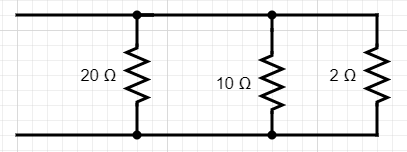

Find tangent planes for the functions below at the specified points.
\( \displaystyle z = g(x,y) = \sqrt{4-x^2 - y^2}\) at point \((1,1,\sqrt{2})\)
\( \displaystyle z = f(x,y) = 32 - 3x^2 - 4y^2\) at point (2,1,16)
Linear Approximation in 2D
Let \(\displaystyle f(x,y) = \frac{5}{x^2 + y^2}\).
What is the tangent plane at (-1,2)?
Use a linear approximation to estimate \(f(-1.05,2.1)\) using \(f(-1,2)\).
Differential Definition
Let \(z = f(x,y)\) be a function of two variables with \( (x_0,y_0) \) in the domain of \(f\). Then the total differential of \(z\) is given
$$dz = f_x(x_0,y_0) dx + f_y(x_0,y_0)dy.$$
Example - Resistors

Consider 3 resistors in parallel. The total resistance is given by
$$\frac{1}{R_{tot}} = \frac{1}{R_{1}} + \frac{1}{R_{2}} + \frac{1}{R_{3}}.$$
Let \(R_1 = 20 \Omega \pm 1 \Omega\), \(R_2 = 10 \Omega \pm 0.5 \Omega\), and \(R_1 = 2 \Omega \pm 0.2 \Omega\).
Calculate \(R_{tot}\).
Calculate the total differential \( dR_{tot}\)
Use your answer above to estimate the error in \(R_{tot}\).
Example - Platelet Volume
Platelets are small ellipsoidal nonnucleated cells which are important for blood clotting.
Assume a platelet has an ellipsoidal shape (like an M&M or a Skittle) with diameters 2, 8, and 8 microns(\(\mu m\)).
The tolerance in each of these measurements is \(\pm 100 nm\). Estimate the volume (\(\pm\) tolerance) of this platelet using ideas of differentials.